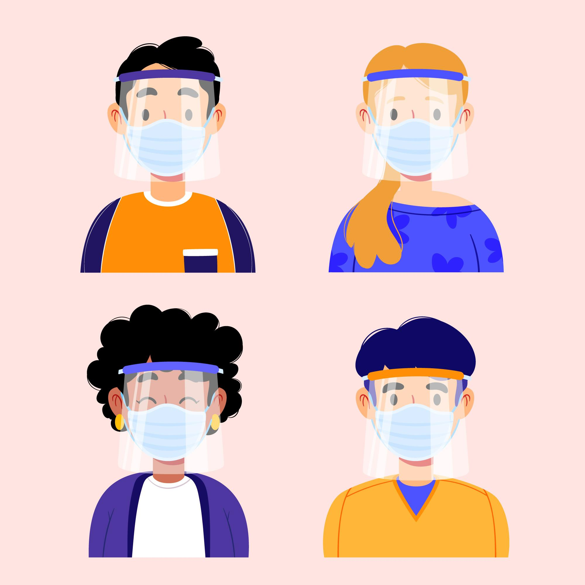

Nuestra misión es mejorar la salud y calidad de vida de las personas mediante una asistencia sanitaria especializada de vanguardia, la excelencia técnica y humana de todos los que aquí trabajamos, y el magisterio y la investigación que desarrollamos.
Nuestra visión es ser reconocido como un hospital de referencia que está en la vanguardia científica, tecnológica y organizativa para resolver los problemas de salud, y ayudar a trasformar y mejorar la Sociedad mediante la innovación y la excelencia en todas sus líneas de actividad. Al que los pacientes eligen por su trayectoria, prestigio y humanidad, y donde las personas con talento deseen incorporarse para crecer como profesionales.
UHospital es una organización con más de tres semanas de historia en continua evolución para adaptarnos a las necesidades de nuestros pacientes. Actualmente está compuesto por más de 7.500 profesionales repartidos en un complejo hospitalario con más de 20 edificios entre los que se incluyen diversos centros asistenciales además de dos centros de especialidades y otros tantos de salud mental.
Nuestro objetivo para el futuro es continuar trabajando en la búsqueda permanente de la calidad y la excelencia sanitaria en el servicio que prestamos a los ciudadanos, con una gestión eficaz y eficiente de nuestros recursos, superándonos día a día, para que nuestro afán de superación revierta positivamente en los ciudadanos a los que atendemos, que configuran nuestra razón de ser y eje fundamental de nuestra actividad.

Contáctenos al 1-877-430-CELL (2355)
También puede chatear con nosotros
Horas de operación: 8 AM - 11:45 PM (Tiempo Central) de Lunes a Domingo
Correspondencia a:
UHospital, S.A.
Attention: Executive Resolution Department
9700 NW 112th Avenue
Miami, FL 33178
O puede enviar un e-mail a soporte@uhospital.com
¡Hola! Mi nombre es Estephanie Lemus y esta página fue diseñada e implementada en su totalidad por mí. Tengo 22 años y soy estudiante de Ingeniería en Ciencias y Sistemas en la Universidad San Carlos de Guatemala. Soy amante de los perritos y la música, y creo que algún día el mundo será igual de accesible para todas las personas :)
Vector de Médico creado por pikisuperstar - www.freepik.es